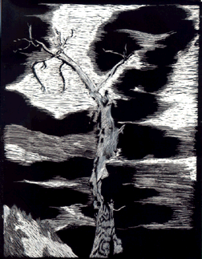

Student Project
Calli

Within the never ending borders of the trees, I feel lost though I know I am not. The trees seem to carry on a life of their own. You can place yourself in a whole new world, blocking out the hustle and bustle. Walking among the numerous ranks of the towering trees, I feel a presence of welcome, yet they are protecting a secret. The secret of life and balance with nature we have seemed to ignore. Stress is taken out of your soul giving a sense of divinity and upliftment. Trees hide the world from you and let you live the life we all were meant to.
-Calli
c. Calli
ALbert Lowry High School
Winnemucca, Nevada USA
Silver Scratchboard 9 "X12"
Bristlecone Pine
Latin Name: Pinus Aristata
Age: 4,600 years
Circumference: TBA
Location: Great Basin National Park
Ely, Nevada
 Return to Main Page
Return to Main Page
June Julian jj68@nyu.edu